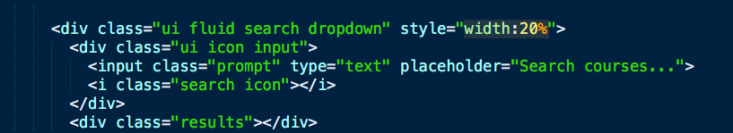
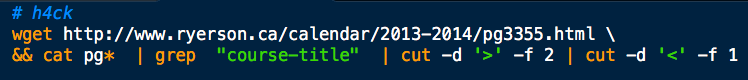

Course Search
To make a simple search bar, you just need to use the ui search class.

This makes use of the list of courses available in the computer science department, as listed
here . These were acquired with the following advanced bash h4ck.

Thesis
Computer Science I
Introductory Programming for Scientists
Digital Computation and Programming
Computer Science II
Computer Organization I
Data Structures
Computer Organization II
Object Oriented Programming and Design
Advanced Programming for Scientists
Graphical Modeling
Database Applications for Scientists
Introduction to C and UNIX
Introduction to Software Engineering
Data Structures for Scientists
Bioinformatics
Comparative Programming Languages
Control Systems
Database Systems I
Computer Graphics
Introduction to Multimedia Computation
Component-Based Programming for the Web
Introduction to Operating Systems
Foundations of Semantic Technologies
Advanced Computer Organization
Autonomous Mobile Robotics
Database Systems II
Human-Computer Interaction
Theory of Parsing
Advanced Algorithms
Introduction to Multimedia Systems
Web Applications
Computer Security
Computational Thinking in Our World
Computer Networks I
Software Verification and Validation
Compilers and Interpreters
Applied Cryptography
Software Project Management
Computer Networks II
Artificial Intelligence I
Web Technology and Performance Measurement
Software Engineering I
Telecomm Networks: Wireless Systems
Parallel Computer Systems
Operating Systems
Distributed Systems and Networks
Human Robot Interaction
Analysis of Algorithms
Software Engineering II
Mainframe Systems
Selected Topics in Computer Science
Advanced Topics in Computer Science
Information Retrieval and Web Search
Digital Image Computing
Data Mining
Extreme Programming and Agile Processes
Compilers
Software Engineering